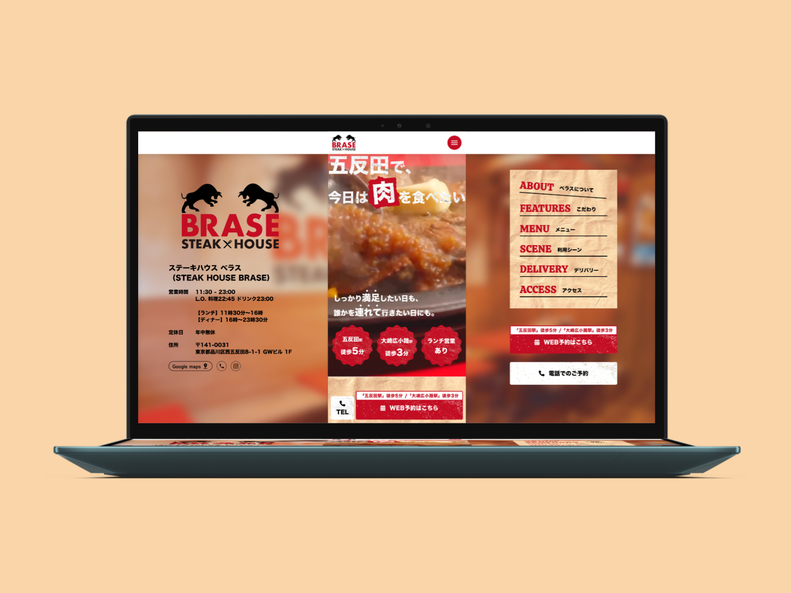
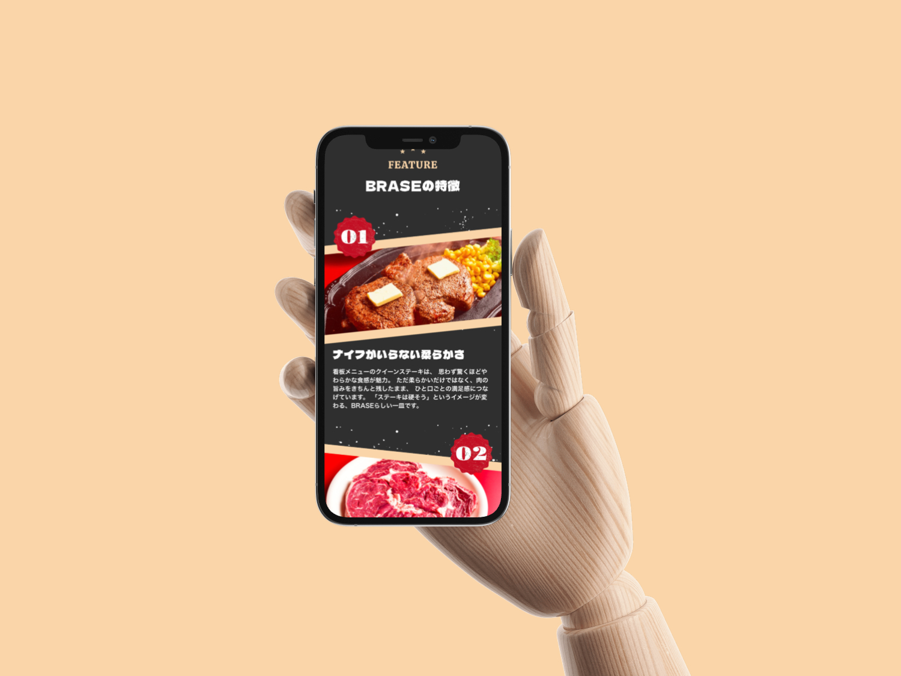
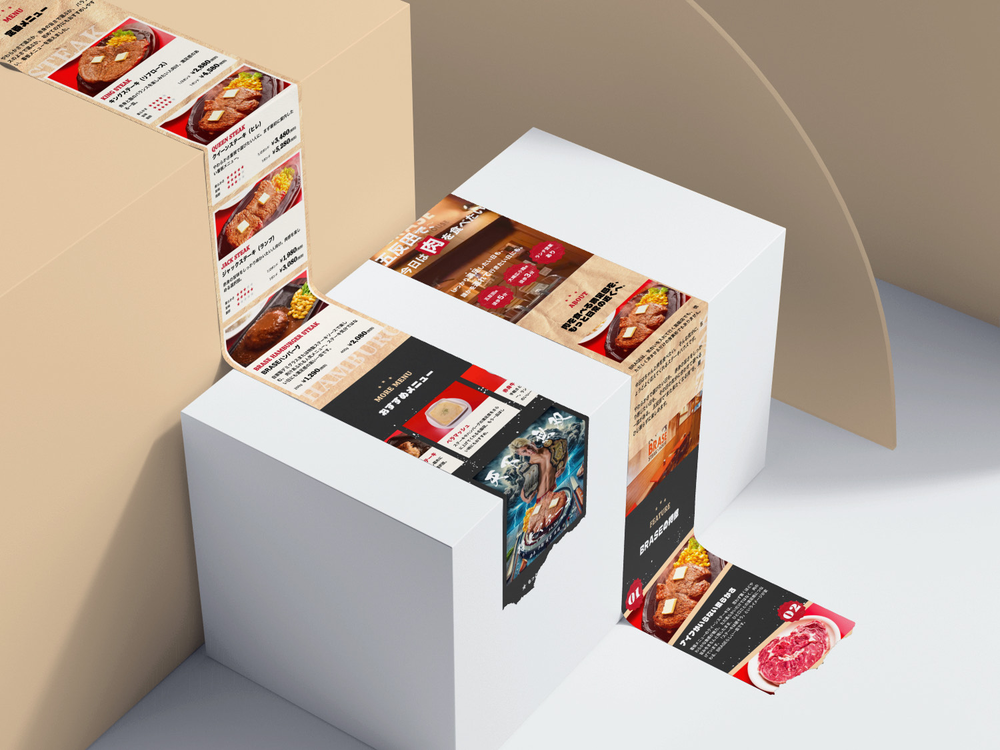

ステーキハウス ベラス
LP制作
制作概要
実務として携わったステーキハウス ベラス様の事業「ステーキハウス ベラス」のランディングページデザイン制作。
スマートフォンからのアクセスを主眼に置いたモバイルファーストな設計で、情報を整理し、直感的にサービスの魅力が伝わるデザインを目指しました。

- 課題
-
- ・新規事業であるステーキハウス ベラスの魅力をターゲットへ効果的に伝える必要があった
- ・スマートフォン閲覧時に快適なレイアウトと視認性が求められた
- ターゲット
-
- ・サービスに関心の高いスマートフォンユーザー
- ・新規の学びやスキルアップを検討している層
- 目的
-
- ・LPを通じてサービスの利点を直感的に理解させる
- ・ユーザーの興味を引き、お問い合わせや申し込みのアクションへ確実につなげる
- デザイン
-
- ビジュアルコンセプト：信頼感と先進性を感じさせる洗練されたデザイン。クリーンな余白を用いた情報整理。
- レイアウト（モバイルファースト）：文字のジャンプ率やボタンのタップ領域など、スマートフォンでの閲覧・操作に最適化。
- 担当範囲・ツール
-
- 担当：デザイン、STUDIO構築
- 使用ツール：Figma / Illustrator / STUDIO
学び
モバイルファーストという前提で情報の優先順位を決めることで、PC基準で考えるよりも削ぎ落とされた本質的なデザインを作ることができました。限られた画面サイズの中で、いかにユーザーを迷わせずにコンバージョンへ誘導するかという導線設計の重要性を再認識しました。

プレビュー